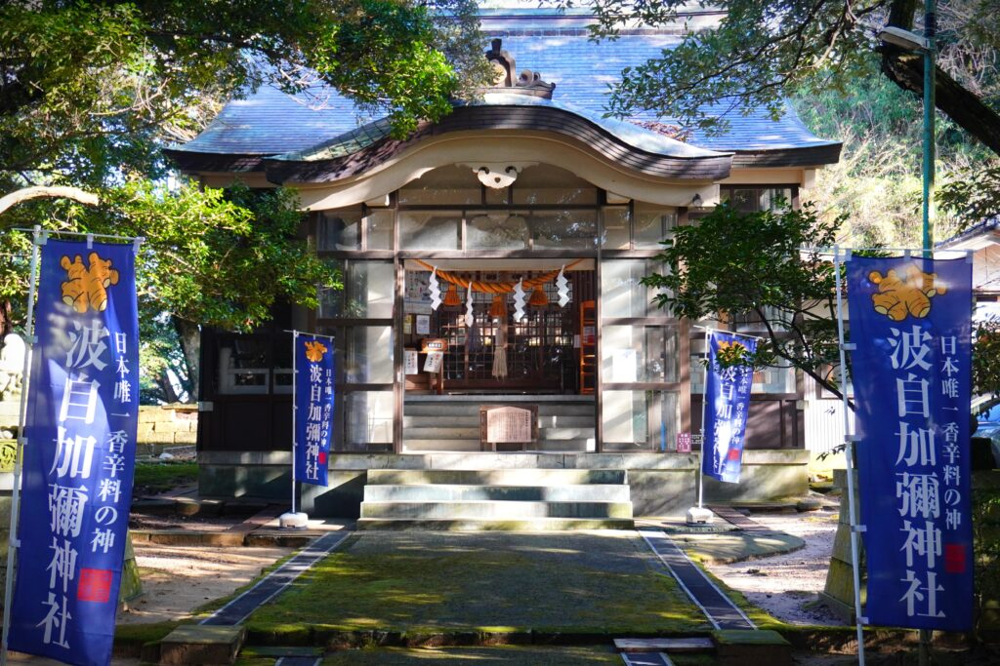
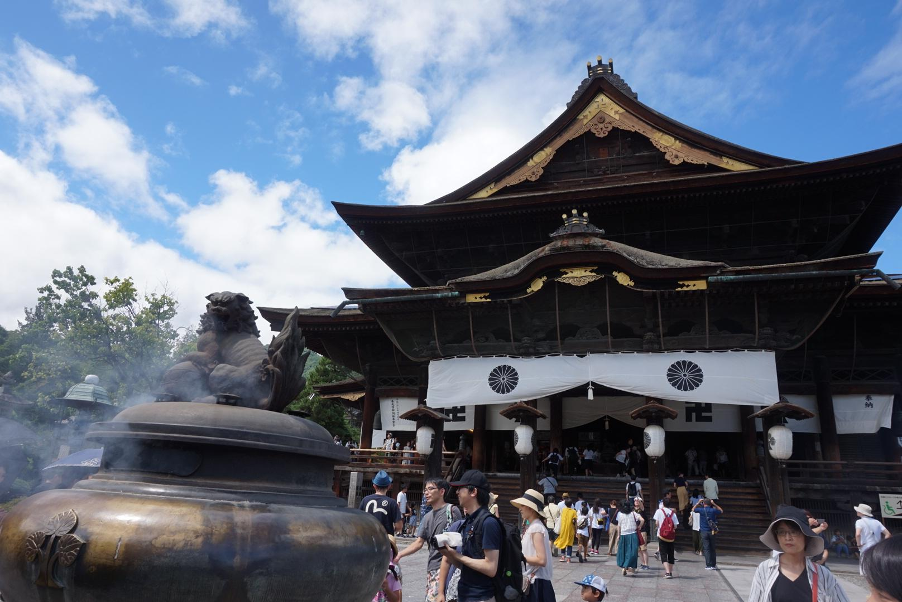
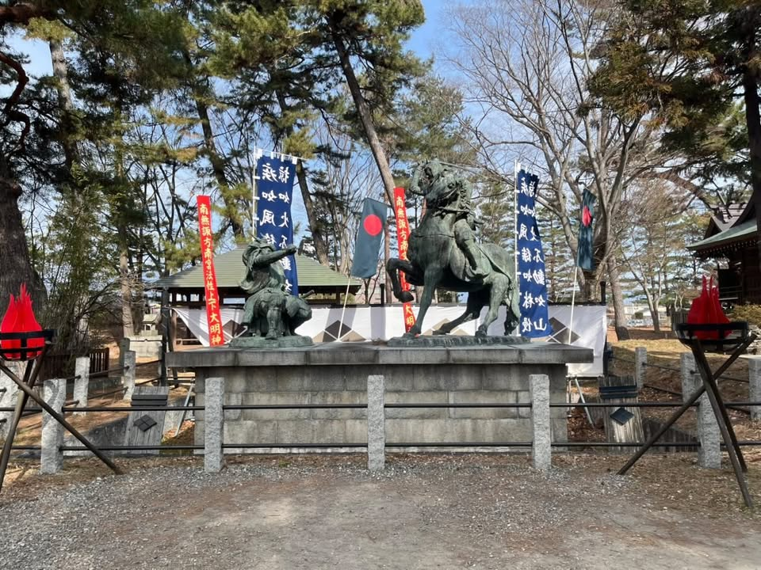
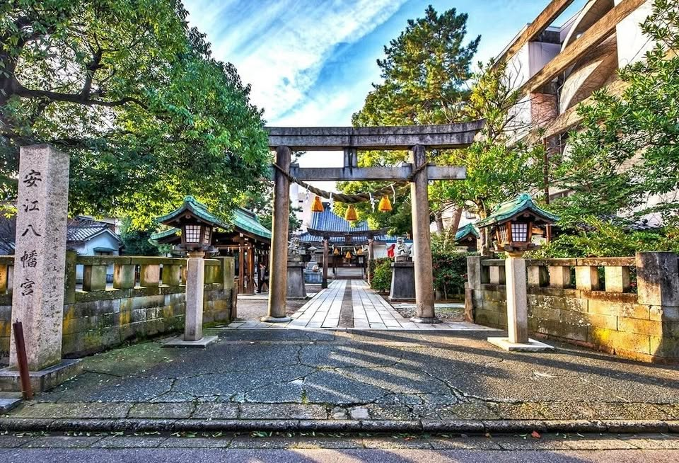
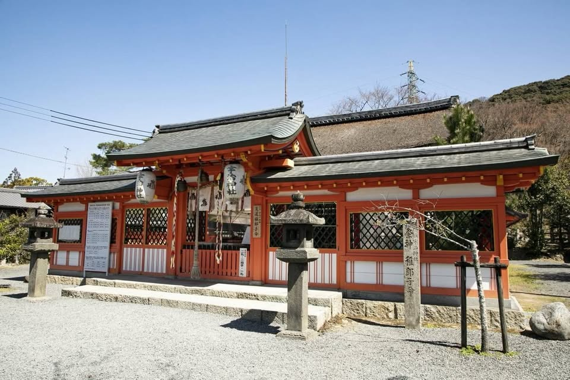
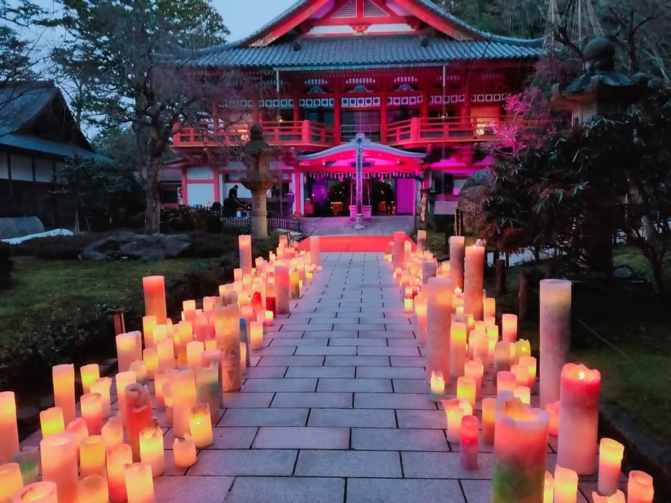

HISTORY OF SHRINES AND TEMPLES

石川県金沢市にある神社。日本で唯一、香辛料の神様を祀る神社として知られています。

約1400年の歴史を持つ寺院。「一生に一度は善光寺参り」と言われています。

武田信玄と上杉謙信が戦った川中島に鎮座する神社です。

応神天皇・神功皇后・玉依姫命を祀る神社。安産祈願で有名です。

学業成就や安産祈願で知られる歴史ある神社です。

白山信仰と深く関わる寺院で、紅葉の名所として有名です。